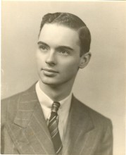

Please note: the AAS Obituaries are temporarily being hosted on this website while their full content is being ingested into the PubPub publishing platform newly adopted by the Bulletin of the American Astronomical Society. When the migration is complete, your existing links will take you to the final, migrated content. Contact peter.williams@aas.org with any questions.
William A. Baum (1924-2012)
William Alvin “Bill” Baum was a versatile astronomer who helped Richard Tousey obtain the first ultraviolet spectrum of the Sun, developed the first photoelectric photometers for the Mt. Wilson & Palomar Observatories, worked with J. D. McGee in London on early solid-state imaging devices, headed the Planetary Research Center at the Lowell Observatory to monitor Mars (and other planets) and plan the first spacecraft (Viking Mission) to it, and helped plan and use the Hubble Space Telescope. He wrote papers on the photodetectors, cameras, planetary rings, cosmology, stellar populations in globular clusters and galaxies, etc.
Bill was born on 18 January 1924 on a small farm near Toledo, Ohio. He received a full-tuition scholarship to the University of Rochester to obtain a B.S. in Physics in 1943. He started graduate work at Caltech but needed to contribute to the war effort, first in the Navy Liaison Office at Caltech and then at the Naval Research Laboratory in Washington, DC. After the war he continued to work with Richard Tousey; they used captured V2 rockets to get the first ultraviolet (UV) spectrum of the Sun. The first flight in June 1946 buried itself in a deep crater, but the second in October 1946 produced the first spectrum in the UV of an astronomical object.
The ultimate goal of UV space spectroscopy was to reach the Lyman alpha feature at 1216 Ǻngstroms, the ground state of the hydrogen atom. For his Ph.D. thesis in 1948 at Caltech, Bill designed a fast spectrograph to observe 1216 and fit into an Aerobee rocket from White Sands. He watched as the rocket exploded and scattered his spectrograph parts widely over the desert. So he did an UV transmission spectrum of the LA smog, which helped in pollution control.
In 1950 after the completion of the Palomar 200-inch telescope, Director Ira S. Bowen realized that future observations would be made with fast electronic devices (photoelectric “photon counters’), rather than photographic plates. He hired Bill on the Mt. Wilson and Palomar Observatories (MtW&P) staff to produce such equipment. His photometers were 40 times faster than photographic plates. He provided calibration standards for Edwin Hubble to improve the redshift relation and for Walter Baade to determine population types in galaxies. In 1953 he worked with Allan Sandage and Halton Arp to observe main-sequence stars for the first time in nearby globular clusters to test the new evolutionary calculations of Martin Schwarzschild and Sandage, and to get accurate distances for globular clusters.
Bill wanted to develop two-dimensional photon-counting devices to replace slow photographic plates. Director Bowen thought that such developments would be too difficult and expensive for MtW&P, and that astronomers should wait for industry to develop them. In an act of courage, Bill appealed to Vannevar Bush, President of the Carnegie Institution, who overruled Bowen and gave Bill permission to proceed. He worked first with Kent Ford and then took a leave of absence and went to England to work with J. D. McGee, who was well-funded at Imperial College, to work on photoconductive detectors (e.g. videocons). Those proved to be less sensitive than other devices, so later Bill joined a team to use Charge-Coupled Devices (CCDs) in a Wide-Field and Planetary Camera on the Hubble Space Telescope (HST).
It was in London in 1960-61 that Bill met Ester Bru, an unusually attractive Norwegian woman, and they were married in Bergen on 27 June 1961. They made many trips to Norway in the following years. After returning to Pasadena, she became a librarian at the Huntington Library and at the MtW&P Observatory. In 1965 Bill was appointed Director of the NASA-funded Planetary Research Center in Flagstaff. They archived planetary data, developed a network of dedicated telescopes around the world to monitor Mars and other planets, and aided in the Viking Mission to Mars. That spacecraft carried two orbiters and two landers. Bill was on the Orbiter Imaging Team and Landing Site Selection Team.
Then in 1977 Bill joined the science team that proposed, designed, and tested CCDs to be used in the Hubble Space Telescope (HST) . He was a co-author on about 20 papers from HST on stellar populations in galaxies and the cosmological distance scale, the amount of missing matter, and dark energy. In 1990 he retired from the Planetary Research Center. He and Ester moved to Seattle, where Bill accepted a research professorship at the University of Washington.
Bill published more than 200 papers on image detectors, the HST camera, cosmology, stellar populations, solar system planets and rings – a remarkable range of topics. Bill liked classical music (as did most observational astronomers who worked in domes), gardening, and inventing gadgets and useful objects. He always seemed cheerful and ready for something humorous. While somewhat shy, he was always dedicated to the scientific projects in hand. Sadly, he developed Parkinson’s Disease in about 2001 and spent the last three years of his life in an assisted living facility. He died on 10 June 2012, survived by his wife, Ester, of 50 years. In Seattle she, an accomplished pianist, has been obtaining scholarships for students at the University of Washington and arranging concerts.
This obituary was based partly on his own short autobiography and partly on notes from his friend Ted Barss. The photograph of Bill was taken when he was about 45.
Obituary written by: Helmut A. Abt (Kitt Peak National Obs.)
BAAS Citation: BAAS, 2012, 44, 012